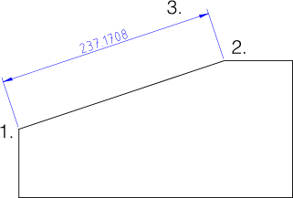

Menu: Wymiar > Wyrównany
Skrót: D, A
Polecenia: dimaligned | da
Pasek narzędziowy / ikona:


Menu: Wymiar > Wyrównany
Skrót: D, A
Polecenia: dimaligned | da
Opis:
Tworzy wyrównane wymiary. Wyrównane wymiary zwykle mierzą długość
istniejącej linii. Linia wymiaru jest zawsze równoległa do linii pomiędzy dwoma
wybranymi punktami 1. i 2..

Procedura: